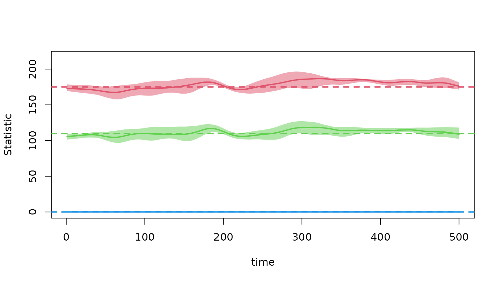
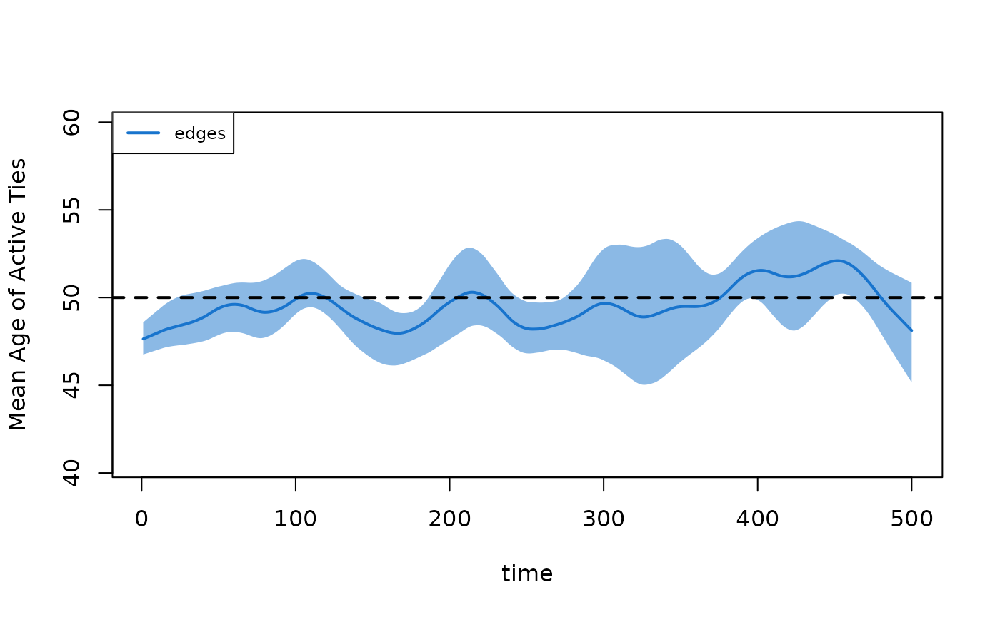
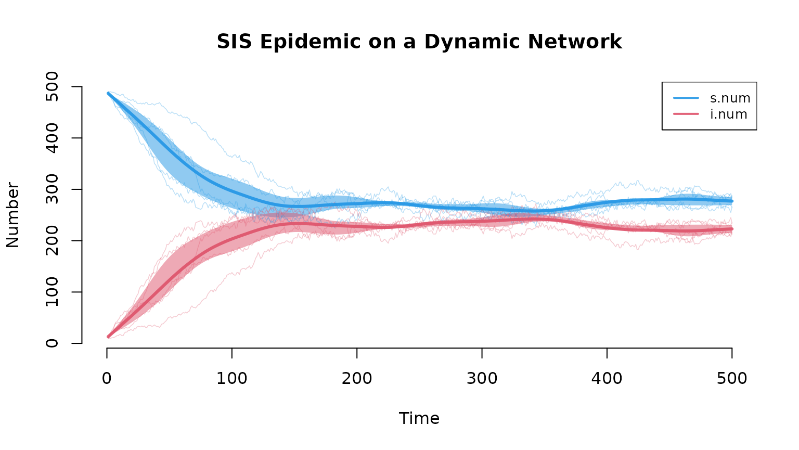
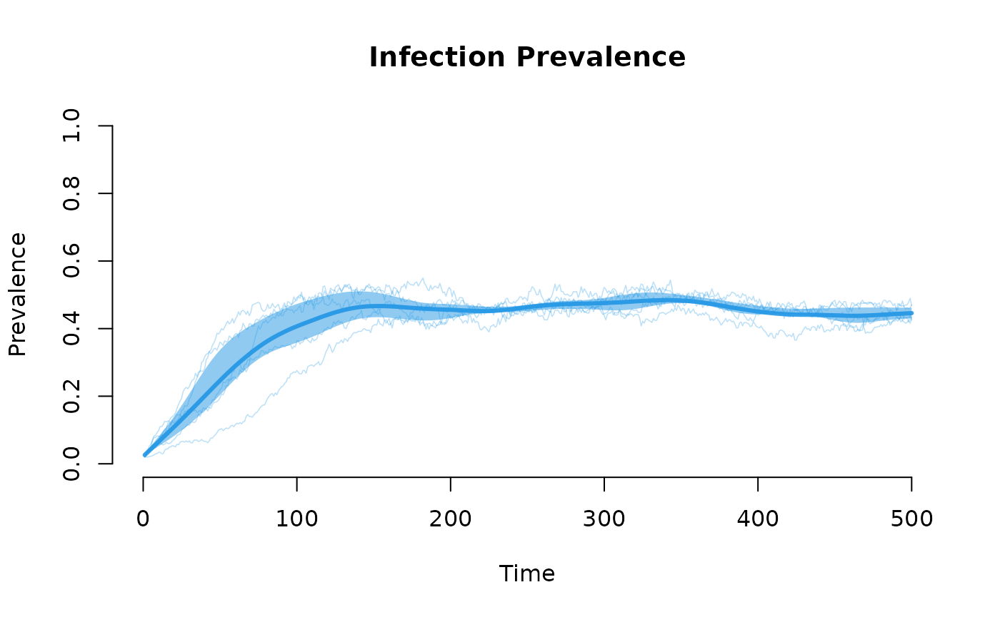

EpiModel: Mathematical Modeling of Infectious Disease Dynamics
Samuel M. Jenness, Steven M. Goodreau, Martina Morris, and Adrien Le Guillou
2026-04-08
Source:vignettes/Intro.Rmd
Intro.RmdWhat EpiModel Does
The EpiModel package provides tools for simulating mathematical models of infectious disease dynamics. It supports three model classes:
- Deterministic Compartmental Models (DCMs): ODE-based, population-level models for rapid exploration of epidemic dynamics under simplifying assumptions.
- Stochastic Individual-Contact Models (ICMs): Agent-based models with random mixing and stochastic variability.
- Stochastic Network Models: The primary focus of EpiModel. These use exponential-family random graph models (ERGMs) from the Statnet suite to represent dynamic contact networks where partnerships form, persist, and dissolve according to statistically estimated rules. Network models capture features that strongly influence transmission dynamics—degree distributions, partnership durations, concurrency, assortative mixing, and clustering.
All three model classes share a unified API: configure inputs with
param.*(), init.*(), and
control.*(), then run simulations with dcm(),
icm(), or netsim().
This vignette walks through the full network model pipeline, from network estimation through epidemic simulation and analysis.
The Network Model Pipeline
Step 1: Network Estimation
Network models begin with specifying and estimating the contact network. We define a network of 500 people, then estimate an ERGM that produces networks with a target mean degree of 0.7 (175 edges), limited concurrency (no more than 110 nodes with 2+ partners), and no one with 4+ partners. Partnerships last an average of 50 time steps.
library(EpiModel)
set.seed(12345)
nw <- network_initialize(n = 500)
formation <- ~edges + concurrent + degrange(from = 4)
target.stats <- c(175, 110, 0)
coef.diss <- dissolution_coefs(
dissolution = ~offset(edges),
duration = 50 # mean partnership duration in time steps
)
est <- netest(nw, formation, target.stats, coef.diss, verbose = FALSE)## Warning: 'glpk' selected as the solver, but package 'Rglpk' is not available;
## falling back to 'lpSolveAPI'. This should be fine unless the sample size and/or
## the number of parameters is very big.Step 2: Network Diagnostics
Before using the estimated network in an epidemic model, we diagnose
the fit. netdx simulates dynamic networks from the fitted
model and compares summary statistics against targets. This is a
critical validation step.
dx <- netdx(est, nsims = 5, nsteps = 500, verbose = FALSE)The formation diagnostic shows how well the simulated networks maintain the target statistics (dashed lines) over time. The mean across simulations (solid line) and the interquartile range (shaded band) should track the targets closely:
plot(dx)
The duration diagnostic confirms that partnership durations match the specified target of 50 time steps:
plot(dx, type = "duration")
Step 3: Epidemic Simulation
With a validated network model, we layer on the epidemic. This SIS model uses a per-act transmission probability of 0.4, 2 acts per partnership per time step, and a recovery rate of 0.05. We seed 10 infections and run 5 stochastic simulations for 500 time steps.
param <- param.net(inf.prob = 0.4, act.rate = 2, rec.rate = 0.05)
init <- init.net(i.num = 10)
control <- control.net(type = "SIS", nsims = 5, nsteps = 500, verbose = FALSE)
sim <- netsim(est, param, init, control)Step 4: Analyzing Results
Epidemic Trajectories
The default plot shows compartment sizes over time, with the mean across simulations (solid line), individual simulation traces, and a shaded interquartile range capturing stochastic variability:
plot(sim, sim.lines = TRUE, sim.alpha = 0.3,
mean.lwd = 3, qnts = 0.5, main = "SIS Epidemic on a Dynamic Network")
For prevalence (proportions rather than counts), use
popfrac = TRUE:
plot(sim, y = "i.num", popfrac = TRUE, sim.lines = TRUE, sim.alpha = 0.3,
mean.lwd = 3, qnts = 0.5, main = "Infection Prevalence",
ylab = "Prevalence", legend = FALSE)
Summary Statistics
summary reports means, standard deviations, and
proportions across simulations at a specified time step:
summary(sim, at = 500)##
## EpiModel Summary
## =======================
## Model class: netsim
##
## Simulation Details
## -----------------------
## Model type: SIS
## No. simulations: 5
## No. time steps: 500
## No. NW groups: 1
##
## Model Statistics
## ------------------------------
## Time: 500
## ------------------------------
## mean sd pct
## Suscept. 277.6 11.194 0.555
## Infect. 222.4 11.194 0.445
## Total 500.0 0.000 1.000
## S -> I 11.8 3.564 NA
## I -> S 13.8 4.970 NA
## ------------------------------Data Extraction
All epidemic data can be extracted as a data.frame for
custom analysis—per-simulation values, means, or standard deviations
across simulations:
d <- as.data.frame(sim)
head(d)## sim time s.num i.num num si.flow is.flow
## 1 1 1 490 10 500 NA NA
## 2 1 2 484 16 500 6 0
## 3 1 3 481 19 500 4 1
## 4 1 4 480 20 500 2 1
## 5 1 5 479 21 500 5 4
## 6 1 6 472 28 500 7 0Transmission Trees
The transmission matrix records every infection event: who infected whom, when, and with what probability. This can be converted into a phylogenetic tree to visualize chains of transmission.
# Run a separate SI model seeded with a single infection for a cleaner tree
set.seed(42)
param2 <- param.net(inf.prob = 0.5, act.rate = 2)
init2 <- init.net(i.num = 5)
control2 <- control.net(type = "SI", nsims = 1, nsteps = 60, verbose = FALSE)
sim2 <- netsim(est, param2, init2, control2)
tm <- get_transmat(sim2)
head(tm)## # A tibble: 6 × 8
## # Groups: at, sus [6]
## at sus inf network infDur transProb actRate finalProb
## <int> <int> <int> <int> <dbl> <dbl> <dbl> <dbl>
## 1 2 100 55 1 22 0.5 2 0.75
## 2 2 500 55 1 22 0.5 2 0.75
## 3 3 141 462 1 44 0.5 2 0.75
## 4 4 175 141 1 1 0.5 2 0.75
## 5 5 223 418 1 5 0.5 2 0.75
## 6 16 414 418 1 16 0.5 2 0.75
tmPhylo <- as.phylo.transmat(tm)## found multiple trees, returning a list of 3phylo objects
par(mar = c(2, 1, 2, 1))
plot(tmPhylo, show.node.label = TRUE, root.edge = TRUE, cex = 0.5,
main = "Transmission Tree")Each tip is an infected person; each internal node (labeled with the infector’s ID) is a transmission event. The horizontal axis shows time, revealing when and how the epidemic branched through the network.
Extending EpiModel
The built-in SI, SIR, and SIS models are starting points. EpiModel’s
extension API allows you to define custom models with arbitrary disease
states, demographics, interventions, and feedback between the epidemic
and the network. A custom module is simply a function that takes the
simulation state (dat) and current time step
(at), modifies state, and returns it:
# Example: a custom progression module for an SEIR model
progress_module <- function(dat, at) {
active <- get_attr(dat, "active")
status <- get_attr(dat, "status")
# E -> I transition
ids.EtoI <- which(active == 1 & status == "e" & runif(length(status)) < 0.1)
status[ids.EtoI] <- "i"
# I -> R transition
ids.ItoR <- which(active == 1 & status == "i" & runif(length(status)) < 0.02)
status[ids.ItoR] <- "r"
dat <- set_attr(dat, "status", status)
dat <- set_epi(dat, "ei.flow", at, length(ids.EtoI))
dat <- set_epi(dat, "ir.flow", at, length(ids.ItoR))
return(dat)
}Custom modules are passed to control.net and integrated
into the simulation loop. The EpiModel Gallery
provides a library of worked extension examples, and the advanced
vignettes in this package document the full API.
Learning Pathway
We recommend the following tiered sequence for learning EpiModel, consistent with the learning pathway on the EpiModel website. This is oriented towards those interested in stochastic network models, the primary focus of EpiModel.
Beginner
-
Intro to EpiModel vignette: This vignette and the
full package
documentation provide an overview of the three model classes and the
unified API (core functions:
netest,netdx,netsim). - JSS methods paper: Our primary reference, published in the Journal of Statistical Software, provides the mathematical and computational foundations for all three model classes. See citation below.
- NME Course, Section I (Chapters 3–35): Lecture slides and tutorials covering network science, ERGM specification, model diagnostics, and built-in epidemic models (https://epimodel.github.io/sismid/).
Intermediate
- NME Course, Section II (Chapters 36–49): Extending EpiModel materials covering the extension API for building custom models with novel disease states, demographics, and interventions.
- EpiModel Gallery: A library of worked extension model templates demonstrating custom disease states, demographics, interventions, and multi-layer networks (https://epimodel.github.io/EpiModel-Gallery/).
Advanced
-
Package vignettes: These vignettes within the
package cover specific topics for users building custom network models
with the extension API:
- Working with Model Parameters: Scenarios for time-varying parameters, parameter input via tables, and random parameter distributions for sensitivity analysis.
- Working with Custom Attributes and Summary Statistics: Nodal attributes, attribute histories, epidemic trackers, and custom summary statistics.
- Working with Network Objects: Accessing and manipulating network objects, edgelists, cumulative edgelists, and reachability analysis within custom modules.
- EpiModelHPC & slurmworkflow: Tools for running large-scale simulations on high-performance computing clusters.
- Template repositories: EpiModelHIV and EpiModelCOVID provide full-scale research model implementations.
Package Documentation
The current version of EpiModel is v2.6.1. Within the package, consult the help documentation for each exported function:
help(package = "EpiModel")To see the latest updates, consult the NEWS file in the
package or our GitHub Releases (https://github.com/EpiModel/EpiModel/releases).
Getting Help
Technical coding questions, conceptual modeling questions, and feature requests may be posted as GitHub issues at our main repository (https://github.com/EpiModel/EpiModel/issues).
Citation
If using EpiModel for teaching or research, please include a citation to our primary methods paper:
Jenness SM, Goodreau SM and Morris M. EpiModel: An R Package for Mathematical Modeling of Infectious Disease over Networks. Journal of Statistical Software. 2018; 84(8): 1-47. doi: 10.18637/jss.v084.i08 (https://doi.org/10.18637/jss.v084.i08).